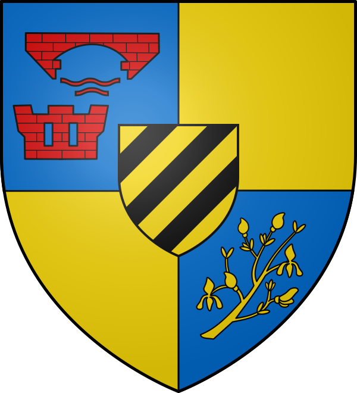
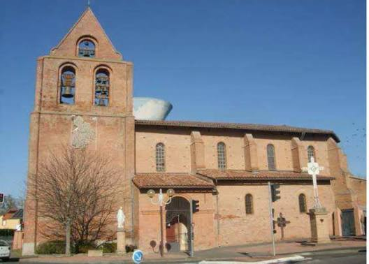

Castelginest
Le Château
des Genêts


⟹ Saint-Sernin · Hers-Mort · Nord toulousain ⟸

Un nom qui parle de château et de genêts. Le nom de Castelginest associe le castel, le lieu fortifié, au ginest, le genêt en langue d'oc. Le blason de la commune reprend cette lecture : un château et un pont de gueules sur fond d'azur, accompagnés de branches de genêt d'or.
1137 : un hameau nommé Vilaigo. Le lieu apparaît pour la première fois en 1137 dans le cartulaire de l'abbaye Saint-Sernin de Toulouse. Ce n'est alors qu'un hameau appelé Vilaigo, à une dizaine de kilomètres au nord de la ville, groupé autour d'une petite église dédiée à saint Pierre et dépendant du monastère toulousain.

Les moines de Saint-Sernin, seigneurs du lieu. En 1247, la métairie que possède Saint-Sernin à Castelginest dispose d'une chapelle consacrée à saint Étienne, qui annonce l'église actuelle. Jusqu'à la Révolution, c'est l'abbaye Saint-Sernin qui exerce l'autorité seigneuriale sur le village.
Une châtellenie aux portes de Toulouse. En 1226, le territoire est intégré à la nouvelle zone placée sous la protection de Toulouse. Lors du découpage de 1279, Castelginest devient l'une des quatre châtellenies de ce territoire, aux côtés d'Auzielle, de Castanet et de Portet.
1367 : un fort de terre pendant la guerre de Cent Ans. Le 12 juin 1367, les autorités ecclésiastiques et les habitants décident d'élever « un fort en terre afin de protéger les hommes et leurs biens » contre les bandes qui ravagent le pays. Le fort a disparu, mais les noms de rues en gardent la trace : la rue du Fort et le chemin du Tour de Ronde.
XVIe siècle : l'église Saint-Étienne. Entre 1540 et 1560, les habitants bâtissent une nouvelle église placée sous le patronage de saint Étienne. Elle présente le clocher-mur typique du pays toulousain, percé de trois ouvertures, de petites chapelles latérales et des colonnes engagées.
XIXe siècle : un village de campagne. Castelginest reste longtemps un petit village agricole : environ 460 habitants en 1793, à peine 540 en 1936. En 1853, la commune se dote d'une mairie dessinée par l'architecte Jacques-Jean Esquié, avec un fronton et une bichromie de brique et d'enduit ocre. Les grandes propriétés marquent le paysage, comme la ferme Saint-Pierre, du XVIIIe siècle, et la propriété Franclieu avec son pigeonnier de style éclectique.
XXe siècle : de 780 à plus de 10 000 habitants. Jacques Mauré, agriculteur et conseiller général, administre la commune de 1947 à 1978 ; le collège porte aujourd'hui son nom. C'est sous son mandat que commence la grande transformation : attirée par la proximité de Toulouse, la population passe de 780 habitants en 1962 à 1 412 en 1968, près de 3 900 en 1975, puis 7 730 en 1999. Les lotissements remplacent peu à peu les champs, entre les coteaux à l'est et la rivière de l'Hers à l'ouest.
Une commune de la métropole toulousaine. Membre de Toulouse Métropole, Castelginest compte 11 271 habitants en 2023. Depuis 2015, elle donne son nom au canton de Castelginest. La ville conserve pourtant un cadre « à la campagne » apprécié de ses habitants, avec ses 812 hectares ouverts sur les coteaux du nord toulousain.
Castelginest est un village devenu ville : né dans le domaine des moines de Saint-Sernin et abrité derrière son fort de terre, il a gardé de son passé une église, une mairie et un pigeonnier de brique, et de son nom les genêts de son blason.
Repère synthétique — L'Âme des RégionsPour aller plus loin — sources et documentation :
• Mairie de Castelginest — histoire de la commune
• Ville de Castelginest
• Archives départementales de la Haute-Garonne
• Geneawiki — Castelginest (31116)
• Toulouse Métropole
• INSEE — Castelginest
Jacques Mauré, agriculteur et conseiller général, maire de 1947 à 1978, a accompagné les débuts de la croissance de la commune ; le collège de Castelginest porte son nom. L'architecte Jacques-Jean Esquié, auteur des plans de la mairie de 1853, a laissé au village son principal édifice civil.
Pendant plus de six siècles, l'histoire du village est liée à l'abbaye Saint-Sernin de Toulouse, seigneur du lieu jusqu'à la Révolution. Saint Étienne, patron de la paroisse depuis le XIIIe siècle, a donné son nom à l'église. Le blason, avec son château, son pont et ses branches de genêt, rappelle l'origine du nom de la commune.
Castelginest est jumelée avec Ponte di Piave, en Italie. Le marché de plein vent, le cinéma, les complexes sportifs et la vie associative animent cette commune où se mêlent anciennes familles du village et nouveaux habitants venus de toute la région toulousaine.
Accès : à une dizaine de kilomètres au nord du centre de Toulouse. Des lignes de bus du réseau Tisséo relient la commune au métro B, au nord de Toulouse. La gare Toulouse-Matabiau et l'aéroport Toulouse-Blagnac se trouvent à environ une demi-heure.
Informations : la mairie renseigne sur la vie locale, le marché et les manifestations ; l'office de tourisme de Toulouse, installé dans le donjon du Capitole, couvre l'ensemble de la métropole.
Conseil de visite : combinez une promenade dans le vieux village (mairie, église, rue du Fort) avec une balade le long de l'Hers, puis prolongez vers le vignoble de Fronton ou vers Toulouse et la basilique Saint-Sernin.